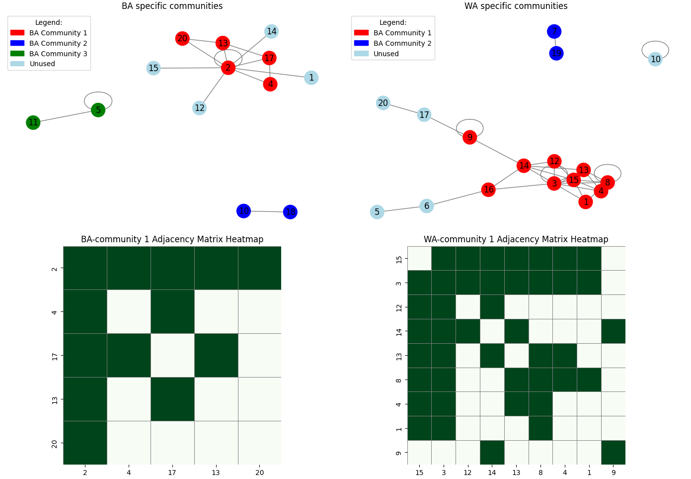

get_components_bsw_validation
import sys
import networkx as nx
import matplotlib.pyplot as plt
from matplotlib.patches import Patch
from matplotlib.patches import Wedge
import pandas as pd
import seaborn as sns
def read(n):
f = open(n)
f.readline()
edges_AA = []
edges_EA = []
for l in f:
l = l.rstrip("\n")
ll = l.split("\t")
aa_score = float(ll[1])
ea_score = float(ll[2])
edge = ll[0].split("--")
edge[0] = int(edge[0].split()[0])
edge[1] = int(edge[1].split()[0])
if aa_score>ea_score:
edges_AA.append((edge[0], edge[1]))
else:
edges_EA.append((edge[0], edge[1]))
f.close()
return edges_AA, edges_EA
if __name__=="__main__":
e_AA, e_EA = read(sys.argv[1])
G = nx.Graph()
G.add_edges_from(e_AA)
components = list(nx.connected_components(G))
print("AA modules")
for i, component in enumerate(components):
print(f"Component {i+1}: {component}")
# Create side-by-side plots
fig, axes = plt.subplots(2, 2, figsize=(14, 12))
#plt.figure(figsize=(8, 6))
axes = axes.flatten()
pos = nx.spring_layout(G, seed=42, k=0.55) # layout for better visualization
node_color = {}
for c in [20, 13, 2, 17, 4]:
node_color[c] = "red"
for c in [1, 12, 15, 14]:
node_color[c] = "lightblue"
for c in [11, 5]:
node_color[c] = "green"
for c in [10, 18]:
node_color[c] = "blue"
node_colors = [node_color[c] for c in G.nodes()]
nx.draw(G, pos, with_labels=True, node_color=node_colors, cmap=plt.cm.Set3, node_size=400, edge_color='gray', ax=axes[0])
#plt.title("Connected Components in Graph")
#plt.show()
legend_handles = []
patch = Patch(color="red", label=f"BA Community 1")
legend_handles.append(patch)
patch = Patch(color="blue", label=f"BA Community 2")
legend_handles.append(patch)
patch = Patch(color="green", label=f"BA Community 3")
legend_handles.append(patch)
patch = Patch(color="lightblue", label=f"Unused")
legend_handles.append(patch)
# Add legend to second plot (or wherever you prefer)
axes[0].legend(handles=legend_handles, title="Legend:", loc='upper left')
axes[0].set_title("BA specific communities")
# Get adjacency matrix (as a NumPy array)
nodes = [2, 4, 17, 13, 20]
Gsub = G.subgraph(nodes).copy()
Gsub.remove_edges_from([(13, 20),]) #remove artificial edges
adj_matrix = nx.to_numpy_array(Gsub, nodelist=nodes)
df_adj = pd.DataFrame(adj_matrix, index=nodes, columns=nodes)
sns.heatmap(df_adj, cmap="Greens", cbar=False, linewidths=0.5, linecolor='gray', square=True, ax=axes[2])
axes[2].set_title("BA-community 1 Adjacency Matrix Heatmap")
#===============================================
G = nx.Graph()
G.add_edges_from(e_EA)
components = list(nx.connected_components(G))
print("EA modules")
for i, component in enumerate(components):
print(f"Component {i+1}: {component}")
pos = nx.spring_layout(G, seed=4, k=0.5) # layout for better visualization
node_color = {}
for c in [9, 16, 14, 12, 3, 15, 13, 4, 8, 1]:
node_color[c] = "red"
for c in [7, 19]:
node_color[c] = "blue"
for c in [20, 17]:
node_color[c] = "lightblue"
for c in [5, 6, 10]:
node_color[c] = "lightblue"
node_colors = [node_color[c] for c in G.nodes()]
nx.draw(G, pos, with_labels=True, node_color=node_colors, cmap=plt.cm.Set3, node_size=400, edge_color='gray', ax=axes[1])
legend_handles = []
patch = Patch(color="red", label=f"BA Community 1")
legend_handles.append(patch)
patch = Patch(color="blue", label=f"BA Community 2")
legend_handles.append(patch)
patch = Patch(color="lightblue", label=f"Unused")
legend_handles.append(patch)
# Add legend to second plot (or wherever you prefer)
axes[1].legend(handles=legend_handles, title="Legend:", loc='upper left')
axes[1].set_title("WA specific communities")
nodes = [15, 3, 12, 14, 13, 8, 4, 1, 9]
Gsub = G.subgraph(nodes).copy()
adj_matrix = nx.to_numpy_array(Gsub, nodelist=nodes)
df_adj = pd.DataFrame(adj_matrix, index=nodes, columns=nodes)
sns.heatmap(df_adj, cmap="Greens", cbar=False, linewidths=0.5, linecolor='gray', square=True, ax=axes[3])
axes[3].set_title("WA-community 1 Adjacency Matrix Heatmap")
plt.tight_layout()
plt.show()
Running Command
python3 get_components_bsw_validation.py bsw.validationResults
